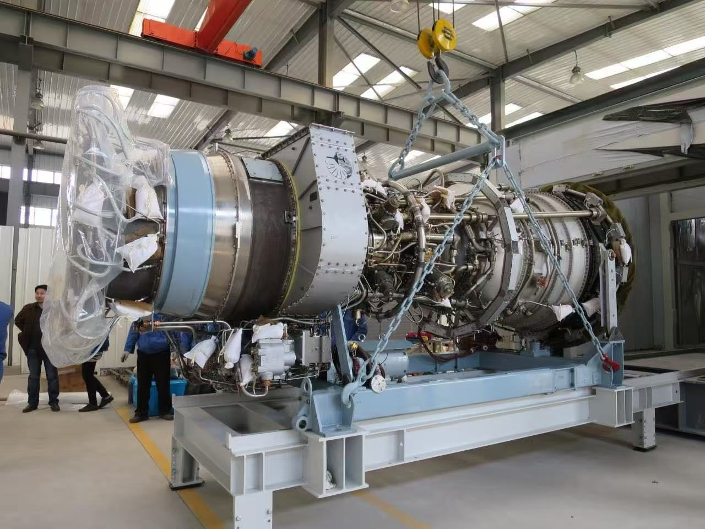

Газотурбинные установки от микротурбин до 75 МВт: разработка, расчёты, сервис
Проектируем газотурбинные установки и их узлы, выполняем расчёты и выпускаем конструкторскую документацию (КД), продлеваем ресурс эксплуатируемых машин. Сопровождаем партнёров от технического задания до испытаний и освоения производства.

Шесть взаимосвязанных направлений
Инжиниринг и ОКР
Разработка газотурбинных установок и узлов по контракту: от технического задания и эскизного проекта до рабочей конструкторской документации и сопровождения испытаний.
ПодробнееСервис и продление ресурса
Обследование парка, оценка остаточного ресурса, продление межремонтных интервалов, восстановление деталей горячего тракта, шефмонтаж и пусконаладочные работы.
ПодробнееРотодин ЛАБ
Инженерное моделирование с применением ИИ: расчётные отчёты, сравнения платформ, автоматизация расчётных цепочек и выпуска КД.
ПодробнееТопливная гибкость
Водородные смеси, синтез-газ из отходов и биомассы, биогаз и жидкое топливо. Закладываем в конструкцию на стадии эскизного проекта.
ПодробнееКонсалтинг и сделки
Сопровождение совместных предприятий, техническая проверка контрагентов и оборудования, переговорная поддержка, структурирование соглашений.
ПодробнееПоставки и аналитика
Газотурбинные установки, двигатели и комплектация с полным документальным циклом; обзоры рынка и сравнения платформ по запросу.
ПодробнееПроектируем, рассчитываем, испытываем и передаём документацию
Полный цикл
От термодинамики и газодинамического расчёта до конструкторской документации, программы испытаний и авторского надзора. Каждую дисциплину ведут профильные специалисты.
Независимость
Мы не принадлежим ни одному производителю оборудования. Производство и права на результат остаются у партнёра, который строит машину.
Три языка
Работаем на русском, английском и китайском языках. Проекты в России, странах СНГ и Китае, международные программы локализации.
Машины, разработанные командой

Спрос на машины 25–75 МВт растёт, а производители загружены
Расскажите о задаче
Первая консультация бесплатна: один-два звонка, чтобы уточнить задачу и исходные ограничения. Затем направляем техническое предложение с объёмом работ, сроками и стоимостью.